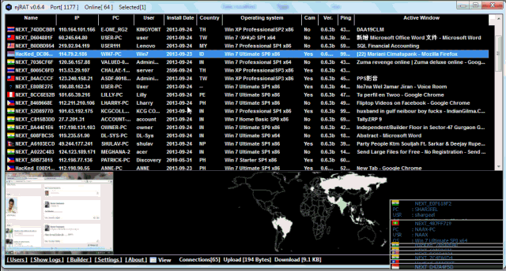
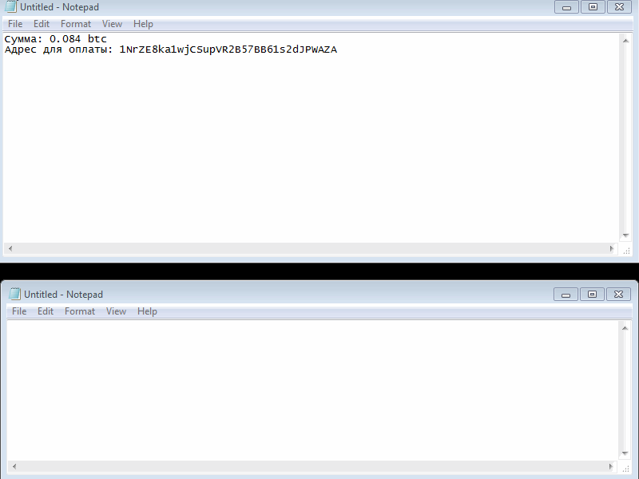

В мире существует гигантское количество вирусов, и их число растёт изо дня в день. Для начала определим, что представляют из себя вирусы. С точки зрения системы это обычные программы, которые живут в системе и пользуются системными ресурсами на ровне со всеми. У вирусов нет доступа к "секретным" функциям ядра, которые позволяют им делать что-то, чего не может другой софт. Главное отличие - вирусные программы создаются с корыстной целью или могут нанести вред компьютеру. Почему так важно понять, что вирус от программы не отличается - это говорит о том, что у вирусов есть возможность маскировать свои вредоносные алгоритмы, тем самым выглядит как обычная программа, которую не будут трогать антивирусы.
Вообще есть программы, функционал которых больше похож на вирусный, хотя это не вирусы. Например skype, через который можно устраивать демонстрации экрана. Или даже teamviewer, который позволят подключаться к компьютеру и полностью управлять им. А это одна из популярных фишек рата. Но в названных мной программах работу этих функций настраивает пользователь, и там есть все инструменты защиты, чтобы никто не перехватил управление. С другой стороны есть уже программы для скрытого наблюдения. Например, их используют в офисах для контроля работы сотрудников. Функционал ратовский, и есть страны где это нелегально, но это ПО как вирус не определяется. Поэтому что является вирусом а что нет определяют не только алгоритмы антивируса, но так же подозрительные программы проходят ручную проверку в антивирусных компаниях.
Знакомство с вирусами начнём с популярных примеров. RAT - remote access tool - средство удаленного доступа в систему. Вирусы этого класса можно найти в интернете, есть несколько бесплатных и хорошо себя зарекомендовавших образца. Сразу скажу, что в сети можно встретить бесплатные вирусы, но надо обратить внимание на 2 момента: это может быть вирус с вирусом, или просто вирус, доступ к которому у вас могут перехватить. 2) У таких вирусов большой detect rate(много антивирусов может его определить). Среди ратов есть nj rat. Он существует давно, у него открытый исходный код, и он работает на последних версиях системы. Он не обладает последним функционалом и умение определять его для любого антивируса - вопрос чести, поэтому придётся маскировать его, но для знакомства с ратами он подходит в самый раз.

В вирусах есть еще разделение на те, которым нужен сервер, и которые работают автономно. Для rat сервер нужен всегда. Под сервером тут не всегда понимается не выделенный сервер, который будет работать 24/7, а этом может быть и компьютер хакера, который запускает клиент по необходимости. Тут так же важен вопрос операционной системы, которая устанавливается на серер. Подавляющее большинство ратов работает на windows, и клиент для управления хакером тоже написан под windows. Но с запуском через виртуальную машину будут проблемы. Для вирусов серверного типа нужен выделенный IP адрес, к которому они будут подключаться. Он есть на серверах, скорее всего выделенный IP есть и на модеме, но в tor его получить невозможно. Поэтому для работы с ратом проще всего взять выделенный сервер на windows(оформить за биткоины), и использовать его IP для привязки ботов.
Другой пример вируса, который уже не требует взаимодействия с сервером - клиппер. Эта штука для подмены данных в буфере обмена. Он способен отслеживать, что копирует пользователь, и подменять содержимое по специальному шаблону. Если с таким сталкиваетесь в первый раз, предлагаю пару минут подумать, для чего хакеры используют подобные вирусы.
Правильный ответ - для подмены адресов криптокошельков. В последнее время криптовалюта все активнее распространяется. Людей, которые ею пользуются, становится всё больше. Хитристь заключается в том, что адреса криптокошельков, которые используются для перевода денег, длинные. Никто не вводит их вручную. Даже если форма оплаты на соседней от кошелька вкладке, адрес приходится копировать. И все адреса криптовают легко отсеить по шаблону. Как клиппер видит что копируется кошелёк, он заменяет его на вшитый адрес создателя. В большинстве случаев это заканчивается тем, что жертва переводит средства на левый адрес, а замечает это только тогда, когда начинает разбираться, почему платёж не прошёл.

Майнинг вирусы. Это в продолжение криптовалютной темы. Тема популярна потому что при взломе машин попадается много пустых машин, получить прибыль с которых обычными методами сложно. С появлением майнинга он стал решением. Любая даже маломощная машина способна приносить доход, тут только вопрос количества ботов. А если майнит на производительном железе, то эффективность возрастает в разы. Под мощным железом я подразумеваю не асики, а игровые компьютеры с хорошими видеокартами. Распространять вирусы в игровой теме не так сложно, можно придумать много дельных схем даже новичку.
Говоря про вирусы не могу не упомянуть про шифровальщики. Эту тему не любят в хакерском сообществе, она считается низкой. Шифровальщик шифрует файлы на компьютере жертвы, а за расшифровку требует выкуп. В последнее время оплату выставляют в биткоинах, он уже официальной валютой даркнете стал. При распространении хакеры стараются целиться на компании, но в большинстве случаев страдают в основном простые пользователи. Шифровальщик перезаписывает им личные фотографии, все важные файлы, а за возможность расшифровки просит деньги. Самое фиговое тут в том, что иногда даже после оплаты файлы не расшифровываются. Так хакеры экономят на разработке вируса и содержании инфраструктуры, но из-за этого репутация всех хакеров сильно страдает.
В чем главное особенность шифровальщика - установка антивируса после заражения ничем не поможет. RAT можно снести из системы, майнер тоже, а вот после удаления самого вируса проблема никуда не уйдет. Если хакер не ошибся в методе шифрования, то без его ключа шифрования доступ к файлам получить невозможно.
Один из самых популярных типов вирусов, которые можно найти в открытых источниках, это ddos ботнеты. У них всегда существует командный центр, с которого хакер может начинать атаки на любые интернет ресурсы. Если вы слышали что-то про DDOS защиту и т.п., то это всё работает только до определённого предела. Бывают такие крупные сети, которые, начни они атаку, положили бы сервера гугла. Ими даже под силу локально "отключать" интернет - атаковать DNS сервера. Они нужны, чтобы доменные имена работали. Вводит человек vk.com в адресную строку, а браузер ему пишет не знаю я никакой vk. Для простого пользователя это означает, что интернет закончился. В общем ddos ботнеты на многое способны. Или не только отдельные сайты выключать можно.
Keylogger - классика жанра. Он на столько разошелся, что его ставили встраивать в качестве функции в других вирусах. Например, в ратах. Принцип работы простой: всё что вводит пользователь пишется в лог. Чтобы проще было сориентироваться туда ещё пишется и заголовок окна. Современные кейлогеры способны перехватывать и буфер обмена. Тогда всё скопированное тоже попадает на сервер.
Стиллеры сгребают всю ценную информацию с машины, которая была на момент попадания. Это пароли из браузеров, данные карточек, файлы криптовалютных кошельков и т.п. В большинстве случаев защита в системе у таких данных недостаточная. Но опытные пользователи знают, что браузер не особо заботится о безопасности, и не сохраняют пароли, поэтому стиллеры не всегда могут собрать всё.
{kind=link}
Формграбберы уже более сложные решения. Они внедряются в браузер и в режиме реального времени собирают данные с форм. Всё что отправляется из браузера может быть перехвачено таким способом. Процесс сбора требует время, но он в перспективе может добраться до более защищенных данных. Такие решения уже в открытом доступе не найти, но цены на вирусы с подобным функционалом приемлемые и начинаются от 500$ за одноразовую покупку.
Скрытые rat - это передовые технологии вирусостроения. С его помощью можно управлять приложениями на компьютере, но сам пользователь не будет об этом знать. То есть получается rat с параллельной сессией. Это даёт 2 преимущества: 1) Пользователь не будет видеть, что кто-то управляет мышкой и запускает приложения 2) Обеспечивается самый надёжный способ обхода антифрод систем. Как машину не проверяй - тот самый пользователь. Но вот широкого распространения у этой технологии нет. Месяц аренды его может стоить несколько тысяч долларов.
Я сказал, что вирусы могут только то, что может обычная программа. Но это не до конца правда. Дело в том, что в любой системе есть уязвимости, "скрытые" функции и баги. Вирусы используя их способны делать немного больше, чем можно себе представить. Например, они могут внедряться в BIOS, тем самым перехватывая управление над всей системой. Более того, в некоторых случаях такие вирусы могут восстанавливаться после переустановки системы. На данный момент серьезных вирусов, которые используют эту технологию, очень мало. Реализация слишком сложная, а разновидностей биоса куча. Поэтому круаных успешных промеров пока нет.
Root kit - это другой необычный вирус. Обычно он используется как часть другого вируса, и способен внедряться в ядро и скрывать свой главный процесс. С обновлениями системы уязвимости, которыми пользуются root kit, закрывают, но рабочие техники всё ещё есть. В лучшем сценарии после отработки руткита вирус полностью скрывается из системы. Его фалов не видно, его нет в списке процессов, но он работает.
У многих на слуху такое слово троян. Это больше не разновидность вируса, а метод распространения. В названия лежит троянский конь - подарок с сюрпризом. Троян строится на основе обычной программы, и работает он как нормальный софт, но втихаря делает свои плохие дела на компьютере. Например, трояны часто встречаются в пиратском ПО. Человек на халяву качает программку, а так сюрприз внутри. И через день у него уже 0 на карточке, пропала крипта или он незаметно для себя стал майнером.
Троянские кони хорошо подходят для распространения. Хакеру их просто сделать и нетрудно распространить. Но тут надо уже придумать как и где будет вестись распространение. А с бекдорами такой проблемы нет. Бекдор можно настроить на автоматическое распространение. Единственная проблема - заполучить доступ к самой уязвимости. Можно просто придти из ниоткуда на специальный форум, найти селлера и за большие деньги купить доступ к уязвимости, но новичку лучше так не делать. Отрабатывать схему извлечения нужных данных из системы надо на более маленьких оборотах.
И напоследок, разновидности бывают не только вирусов, но и у самих хакеров. Они делятся на Black hat и White hat. Первые сидят в даркнете и используют вирусы против закона для личной наживы. Вторые ведут открытую деятельность, проводят конференции и активно делятся результатами работы. Они тоже специализируются на поиске уязвимостей и обходе средств защиты. Только найденные уязвимости они не берут в оборот или не продают за деньги, а сообщают разработчикам, чтобы те их исправили. Они получают деньги за тестирования программ на безопасности в разных компаниях. В основном это реально профессионалы своего дела, подайся они в black hat, подняли бы намного больше денег. Честные... Хотя... а с чего я взял, что они только с тестированный на заказ живут.